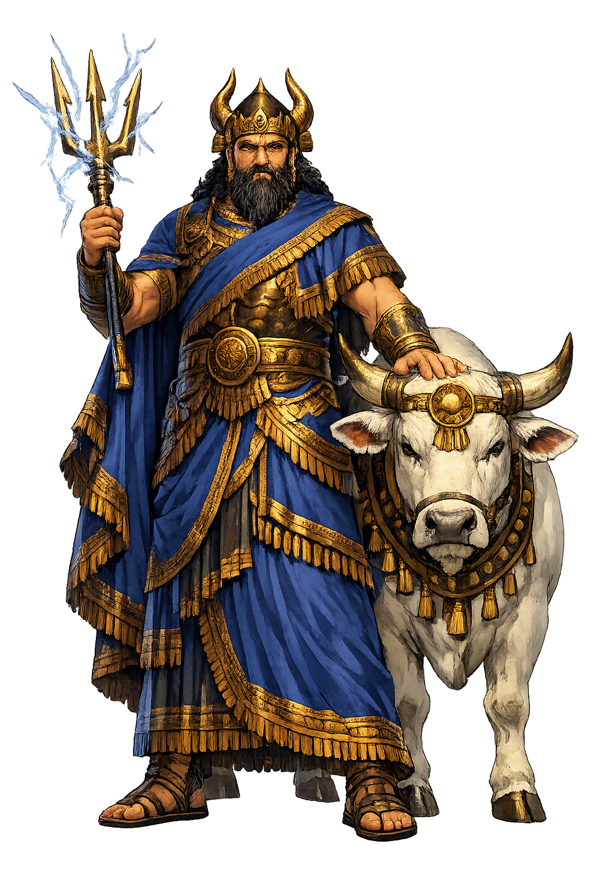

Unicode restoration and ASCII comparison
𒀭𒅎
The name in its original Mesopotamian form. Adad (𒀭𒅎) is attested in the source tradition — “The thunderer”. Its original diacritics and script distinctions carry the full phonetic and orthographic weight of the source tradition.
adad
The plain adad form is identical to the Unicode restoration. Because this name is already written in Latin letters, no diacritics, stress, or script information were lost — only capitalization differs.
Adad
The Unicode restoration does not need to recover lost marks for Adad. Its value is canonical spelling and consistent cataloguing, not the reconstruction of erased orthography. The domain is readable as-is to both DNS and humanity.
Adad.com → adad.com
The non-ASCII characters in Adad are encoded while the ASCII remains visible. To the DNS, it is Punycode. To humanity, it is Adad.
How Adad travels from ancient script to the modern URL
Akkadian Adad (Sumerian Iškur) is the storm-god; the name probably belongs to a Semitic root for thunder/storm.
Owned, ideal, and ASCII forms of Adad
Adad
Restores 𒀭𒅎. The full Unicode restoration. adad.com is not in the PuniCodex collection — it is watched for release; if it drops, this temple upgrades to an owned flagship.
How Adad was spoken
Storm · Lightning · Rain · Divine Voice
Adad is the Akkadian storm god, the lord of thunder and the divine voice that speaks in wind, rain, and lightning. In Sumerian he is Iškur; in the West Semitic world he is Addu or Hadad. Where Enlīl governs the wind and the cosmic decree, Adad is the storm's immediate, destructive, and life-giving power: the thunder that splits mountains, the flood that renews the plain, and the rain on which every Mesopotamian harvest depended.
This temple is a domainless flagship: the ASCII adad.com is unregistrable, so the restoration is displayed here without claiming ownership. The page functions as a philological and atmospheric reconstruction hub for one of the ancient Near East's most widely worshipped deities.
The thunderbolt that splits the sky and reveals the god's presence in the storm cloud.
Bull and lion are Adad's animals; the bull's bellow is the thunder that rolls across the plain.
Without Adad's winter rains the fields of Assyria and Babylonia would fail; the storm is also a fertility god.
Adad and Šamaš preside over divination; thunder and lightning were read as the god's answer to human questions.
Stories of Adad
Adad's myths are not narratives of courtship and descent like Ištar's; they are theophanies — descriptions of the storm's arrival, its terror, and its necessity. He appears in hymns, royal inscriptions, and the great flood epics as the voice that makes the earth tremble and the rain that decides whether a year will bring famine or plenty.
The Akkadian Hymn to Adad describes the god's arrival in the storm: the heavens thunder, the earth shakes, and his lightning flashes from one horizon to the other. He rides the storm winds; the mountains tremble before him. When Adad speaks in thunder, both gods and mortals listen. The hymn is not only praise but propaganda for kings who ruled by the god's mandate: to control Adad's cult was to claim access to the storm itself.
In the Standard Babylonian Epic of Gilgamesh, Tablet XI, Utnapištim recounts the great flood: 'The gods of the abyss rose up; Nergal tore out the dam's bolt; Ninurta marched on and made the weirs overflow.' Adad's voice is the storm within the deluge; his thunder is the signal that the divine council has unleashed destruction upon the land. The storm god who brings rain in due season here becomes the agent of cosmic cleansing.
At Aleppo (Halab), the West Semitic storm god Addu was one of the most powerful deities of the Bronze Age Levant. The great kings of Mari, Yamkhad, and Hatti invoked him in treaties and royal correspondence; his thunder guaranteed oaths and his absence meant disaster. In the Middle Assyrian period Adad appears beside Aššur as a national god, granting the king victory in the field as surely as he granted rain to the field.
In the Babylonian Enuma Elish, Tablet VII, the gods bestow fifty names upon Marduk. One of them is Ramman, 'Thunderer' — an ancient epithet of Adad. By absorbing the storm god's name, Marduk assimilates the power of thunder and rain into his own kingship. The text is a theological charter: the local deity of Babylon becomes lord of the storm because the older storm god's essence has been transferred to him.
Every storm is a theophany for those who know how to read it. Adad is the deity of that reading: the god whose presence is announced by darkening sky, by the first cold drop, by the flash that divides the horizon and the silence that follows before the thunder. He is not a god of hidden places but of open air; his temple is the whole sky above the Mesopotamian plain.
Enter Extended Lore